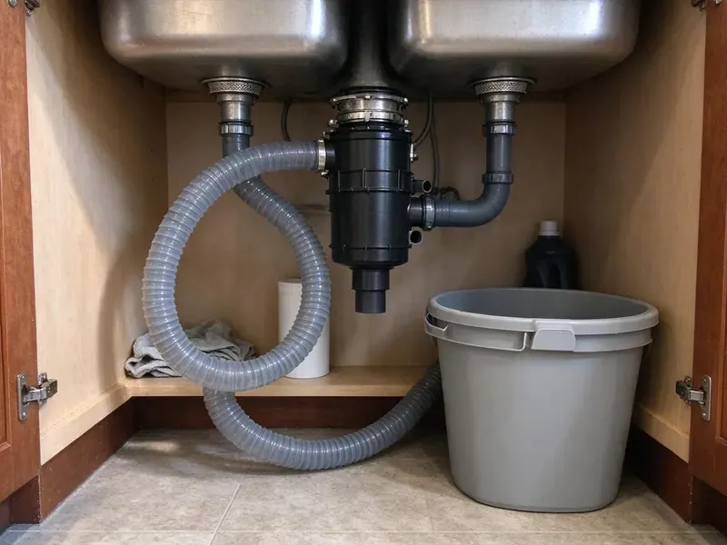

Garbage Disposal Installation in Poughkeepsie, NY
Adding a disposal where there never was one in Poughkeepsie, NY? We look at power, drain height and the sink opening first.
- All Major Brands Installed
- Proper Electrical Hookup
- No Surprise Pricing
- Two-Hour Installs
Garbage Disposal Installation in Poughkeepsie, NY, Done Right
Call and we will help you choose the right size disposal for your home.
The Poughkeepsie Plumbers for New Disposal Installs
HCL Plumbing installs garbage disposals across New York, from straight swaps to kitchens that never had one. Every install gets a new mount. Reusing a tired sink flange or a hardened gasket is the most common reason a new disposal leaks in its first month, so we replace both every time.
Our expertise includes:
- InSinkErator, Waste King and Moen setups
- Hardwired and cord kit connections
- Coordinate new outlets, switches or air switches for disposals

Additional Kitchen Plumbing Services in Poughkeepsie, NY
Our kitchen plumbing services in Poughkeepsie, NY cover sinks, disposals, dishwashers, and grease traps so your kitchen stays clean, safe, and fully functional.


Customers
Why Choose HCL Plumbing for Garbage Disposal Installation in Poughkeepsie, NY?
Disposals that are not mounted or plumbed correctly can leak, vibrate or clog the drain. Every unit goes in to the maker's specs. Those specs cover the mount torque, the cord type and the trap height, and skipping any one of them can void the manufacturer's warranty.
- Clean Install, We leave the cabinet tidy and the box gone when we finish.
- Full Testing, Every install is run with water and checked for leaks.
- Right Size, We match horsepower to how much you cook and your household.
Citywide Coverage
Our plumbers serve every neighborhood in town. We bring the unit, the mounting hardware, the cord kit and the drain parts, so the job is done in a single trip without a run to the supply house. No second appointment needed.
Experienced Team
Both the plumbing and the basic electrical needs of disposals are familiar to our plumbers. Bigger jobs need an electrician. When a new circuit or outlet is required, they coordinate with a licensed electrician so the power and the plumbing are finished on the same day.
Safety-First Approach
We follow New York plumbing code for trap and dishwasher drain connections and the manufacturer's electrical requirements. Power is always off before wiring. We shut off the breaker, test the wires with a meter to confirm they are dead, and only then make the connection at the disposal or junction box.
Trusted Certified Poughkeepsie Plumbing Services Professionals
At HCL Plumbing, we take pride in licensed, certified plumbing services throughout Poughkeepsie, NY. Credentials matter in this trade. Every repair, install and maintenance visit follows strict safety and quality rules, and the plumbers doing the work carry recognized industry credentials.
Call Us Now PHCC Plumbing Contractor Recognition
PHCC Plumbing Contractor Recognition Better Business Bureau (BBB) Accreditation
Better Business Bureau (BBB) Accreditation Angi Certified Pro
Angi Certified Pro ISO 9001 Quality Management Certification
ISO 9001 Quality Management CertificationDisposal Installation in Poughkeepsie, NY: How We Do It
Standard Disposal Installation in Poughkeepsie
Most households in Poughkeepsie do well with a 1/3 to 1/2 horsepower continuous-feed unit. We remove the old unit if there is one, set a new flange in fresh plumber's putty, hang the disposal on a new mount and connect it to the trap with a new discharge tube and gasket. Then we wire it and test it. A smooth spin and a clean drain tell us it is right.

Batch-Feed Disposal Installation in Poughkeepsie, NY
A batch-feed disposal will not start until the lid is in, and the lid holds a magnet that closes a switch inside the unit. No wall switch is needed, which makes them handy in kitchens where running a new switch would mean opening finished walls. They are slower to use. Families with small kids often like the trade.
High-Capacity Disposal Installation in Poughkeepsie, NY
Busy kitchens get the most from a 1 HP unit, like an InSinkErator Evolution or a Waste King Legend model. We confirm the circuit can carry the motor and the drain can handle the flow, because a strong unit pushing into a flat trap arm will still clog. These units weigh more. They get supported during mounting.
Dishwasher Connection With Disposal Installation in Poughkeepsie
Every new disposal has a plug sealing the dishwasher inlet. We knock it out with a screwdriver and hammer, fish the plug out of the chamber and connect the hose with a new clamp. A plug left in backs up the dishwasher. We also install an air gap or high loop, so dirty sink water cannot flow back into the dishwasher while the disposal is draining.
Garbage Disposal Installation Cost Factors in Poughkeepsie, NY
Most of the price comes from the unit and the electrical setup. A plain swap with power already in place costs the least, and new wiring, a lowered drain or a reworked double bowl each add labor as a separate line. Unit and labor are quoted together.
Commercial Disposal Installation in Poughkeepsie
Commercial disposals run 1 to 5 horsepower and typically come with a control panel and solenoid valve and need their own circuit. We set the unit on the mounting collar, run the drain to the grease trap where the local rules require it, and wire the controls so the water runs whenever the motor does. Local rules differ. The local rule gets confirmed before ordering.
High-Horsepower Disposal Installation in Poughkeepsie
A 3/4 or 1 HP unit takes up more room and weighs more than a basic unit, so we measure the cabinet first. Taller units can push the discharge outlet below the wall stub, and when that happens we either lower the drain at the wall or pick a model with a higher outlet so water does not sit in the chamber. We also check the circuit. A larger motor pulls more current when it starts.

Disposal Installation on an Existing Sink in Poughkeepsie
With a typical 1/2 or 3/4 HP unit, we remove the old unit if there is one and install the new one on the existing sink. We connect it to the drain, set the P-trap and wire it, then check the clearance under the sink, which can be tight in older Poughkeepsie homes with shallow cabinets or a water filter mounted on the back wall. Cramped cabinets take some planning. Sometimes a compact model is the better fit.
Garbage Disposal Installation Near Me in Poughkeepsie, NY
Looking for disposal installation near you in Poughkeepsie, NY? HCL Plumbing has plumbers working nearby most days, which makes a same-week install simple to schedule. Note the model number if you bought one. With the model number, we know which cord kit and mount to load, so the job gets done on the first trip.
A nearby plumber knows the kitchens here. In Poughkeepsie, NY, older homes often have high wall stubs and no outlet under the sink, so we plan for both ahead of time. No second visit needed.
HCL Plumbing at a Glance
- Fully licensed plumbing team covering Poughkeepsie, NY
- 24/7 emergency service with same-day scheduling
- Upfront, flat-rate pricing before work begins
- 4.8-star rated by 520+ New York customers
Poughkeepsie Map
Poughkeepsie Information
- Population
- 31,772
- Area codes
- 845/914/518
- Service area
- Poughkeepsie and towns within a 40 mile drive
- Nearby
- White Plains, Yonkers, New Rochelle, Mount Vernon
A properly installed disposal in Poughkeepsie, NY sends scraps through fine enough to clear the trap and keeps the drain line open. Private wells serve a large share of rural homes, and they can carry iron, sulfur or hardness that discolors fixtures and clogs filters.
Expert Services
Reach out to HCL Plumbing for reliable plumbing work done by licensed pros in Poughkeepsie, NY.
Our Specialized Plumbing Services in Poughkeepsie, NY
At HCL Plumbing, you get every kind of plumbing service from one company across Poughkeepsie, NY. From leak detection to full system installs, our team works fast and charges fair prices on homes and commercial properties alike. Explore our core services below:


From Box to Grinding in Poughkeepsie, NY
Installing a disposal is easy when it is done step by step.
Book the Install
Call (716) 396-7101 or use our website to set a time. Need help choosing a unit? We will walk you through it.
Check the Setup
Your plumber checks the sink opening, drain height and power and confirms the right size unit.
Install It
We remove any old unit and install the new one with a new mount, trap connection and wiring.
Frequently Asked Questions About Garbage Disposal Installation in Poughkeepsie
Most installs with the unit included run $275 to $650. Premium units such as an Evolution, or jobs needing new power or a lowered drain, often land between $600 and $1,100. You get a flat price.
A 1/3 or 1/2 HP disposal suits light use. Units from 3/4 to 1 HP are a better fit for families and frequent cooking.
Nearly every disposal fits the standard 3-1/2 inch kitchen sink opening. Some older cast iron sinks, thick composite bowls or sinks with unusual drains need a longer flange or an adapter, and we check before the install.
One or two people cooking light do fine with 1/3 or 1/2 HP. For most families 3/4 HP is plenty, and big households or serious cooks do better with 1 HP to keep up without jams. Cabinet space matters too.
Keep bones, pits and stringy vegetables out. Use cold water every time. Use it every few days even when there is little to grind, since that keeps the impellers free and prevents rust in units that sit idle.
Yes, with a septic-friendly model and care about what goes down it. We can suggest units built for septic homes.
Most families find it worth it. It cuts down on food odor in the trash, especially in warm weather, and makes cleanup easier, as long as grease and stringy foods stay out of it.
The common ones are InSinkErator, Waste King, Moen, Whirlaway and KitchenAid. We can recommend one. The choice usually comes down to noise, power, cabinet space and warranty length, and we walk through those with you before you buy.
Hear From Customers Who Hired Our Plumbing Experts

Nathan E.
Our tankless heater kept throwing an error code and shutting off mid shower. The tech flushed the heat exchanger, which was full of scale, and replaced a bad flow sensor. Hot water has been steady for half a year now.
Water Heater Repair · Mount Vernon, NY
Paul B.
Our pit pump ran nonstop even in dry weather. The plumber found the check valve was stuck open, so the same water kept cycling back into the pit. New valve, new float switch, done in an hour. It runs quiet now.
Sump Pump · Poughkeepsie, NYDaniel K.
A pipe burst in the garage ceiling at 11 at night. Someone answered on the second ring, and the plumber was in my driveway about fifty minutes later. He shut off the main, cut out the split section, and had water back on before 2 am.
Emergency Plumbing · Yonkers, NY
Megan L.
Our upstairs tub drained so slowly that every shower turned into a bath. HCL Plumbing pulled a wad of hair out of the stopper and then snaked the line past the trap. Three months later it still drains fast.
Drain Cleaning · New Rochelle, NY
Diane F.
My kitchen faucet had dripped for months and I finally got tired of hearing it at night. HCL Plumbing came out the next morning, replaced the cartridge and the O rings, and tightened a loose base that was letting water under the sink.
Faucet Repair · Mount Vernon, NYEmily R.
The shutoff valve under our kitchen sink snapped off in my hand on a Sunday morning. HCL Plumbing had someone out by early afternoon. He replaced both angle stops with quarter turn valves and showed me where our main shutoff was, which I honestly did not know.
Plumbing Repair · Poughkeepsie, NY